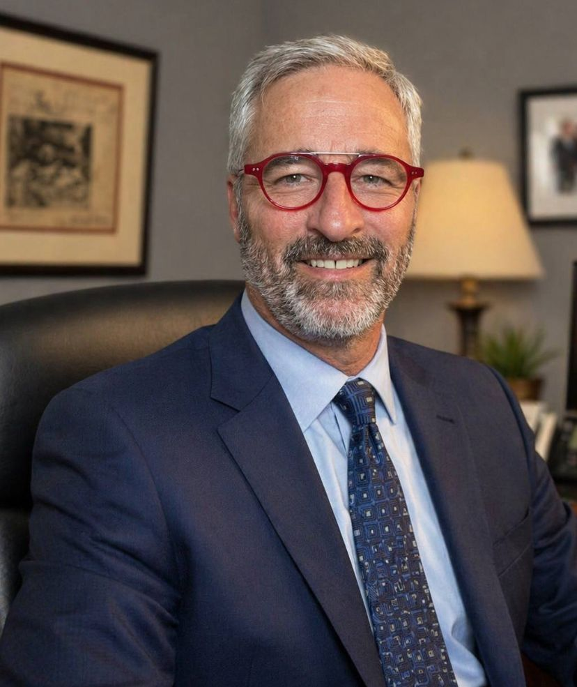

The Foundation.
Built on a legacy of excellence, precision, and relentless innovation since 1989.
Redefining standards
in construction.
Zyrec Construction Company is a professional construction firm dedicated to delivering high-quality building solutions across residential, commercial, and industrial sectors. Established in December 1989, the company is known for its commitment to excellence. We leverage innovative techniques, sustainable practices, and highly efficient project management to provide top-notch construction services tailored to meet our clients' unique scale and constraints.
Quality Assurance
Every project handled with absolute precision and structural integrity.
Zero Incident
Adhering to stringent safety protocols to protect our people and clients.
Co-Founders
Louis Holt &
Michael Zhen Yang
Our Mission
To deliver exceptional construction solutions embodying quality, innovation, and sustainability. We are committed to building lasting relationships through transparency and an uncompromising client-centric approach, striving to create structures that contribute positively to future generations.
Our Vision
To be the vanguard of the construction industry, continuously redefining global standards by integrating highly advanced parametric construction techniques and eco-friendly practices across all our projects worldwide.
Driven by visionaries.

Co-owner, Zyrec Constructions
Louis Holt
An accomplished Construction Engineer with extensive experience in general constructions and industrial projects. Over his career, he has developed a reputation for combining technical precision with innovative problem-solving.
Driven by clarity of purpose and discipline in execution, Louis spans the lifecycle from feasibility and cost estimation to site supervision, specializing in pipelines, refineries, and complex commercial hubs.
Read Full Biography
Louis has contributed to the successful completion of projects across multiple sectors, including offshore drilling platforms, pipelines, refineries, and compressor stations. His expertise spans all stages of the construction lifecycle.
Born in 1966 in the quiet forests of Östersund, Sweden, Louis was raised in a modest household that prized integrity, resilience, humility, and community service. He developed an early fascination with systems, spending his youth exploring the mechanics of Construction Engineering.
At college age, Louis relocated to the United Kingdom to broaden his academic horizons. He earned his Bachelor of Engineering in Electrical & Instrumentation from the University of Bristol. In 2015, Louis began hosting charitable galas to fund autism awareness programs.
“One day, I hope to sit again on a mound of dirt, this time with my grandchildren. We'll look up at the stars. But we will remember the ones we have loved. That is the kind of legacy I want to build.”
Co-owner, Zyrec Constructions
Michael Zhen Yang
A globally recognized infrastructure leader, renowned for his expertise in offshore drilling, heavy transportation logistics, and integrated gas logistics. Michael thrives under his uncompromising vision of sustainable innovation.
A pioneer of innovation in an industry often resistant to change, Michael has championed digital construction technologies and parametric modeling, making Zyrec a modernized technological force.
Read Full Biography
Born on December 29, 1968, in Singapore, Michael was raised in a dynamic cultural crossroads where ambition met structure. His early life was steeped in both the discipline of mathematics and the improvisation of commerce.
In his early twenties, Michael made the bold move to the United States. He earned his degree in Civil Engineering from the University of Southern California and later an MBA from The Wharton School. These formative years shaped his leadership style — analytical, mission-driven, and relentlessly future-focused.
Through the Zhen Foundation, he supports engineering education, scholarships for underrepresented youth, and global research into renewable integration.
“I don't just want to leave pipelines and towers behind. I want to leave courage, inclusion, and light. A refinery fades; a lifted life endures.”